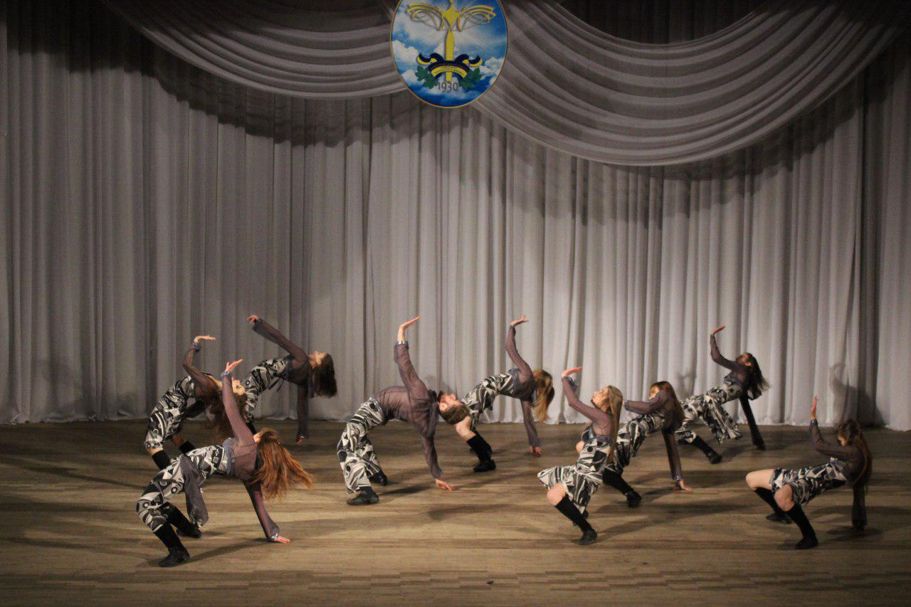
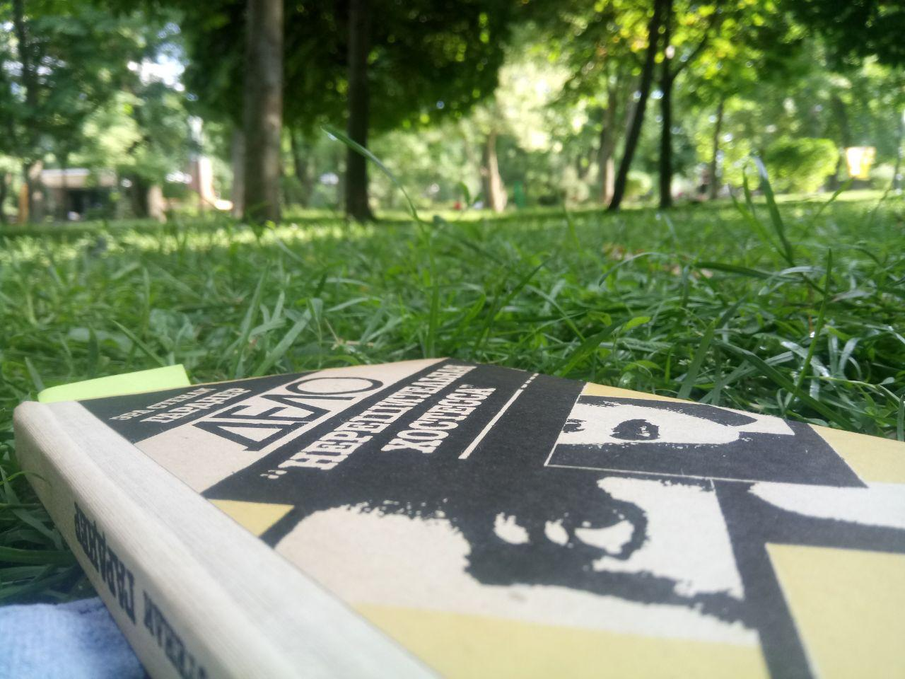

У школі я 11 років займалася народними танцями. Це зробило мене фізично підготовленою та розвинуло мій кругозір. Зараз, в університеті, я танцюю в колективі естрадно-спортивного танцю "Boom". І я дуже вдячна, що змогла туди потрапити, бо після важких та, іноді, нудних пар хочеться відірватися на танцях.

І це є логічним, бо я майбутній дизайнер. Хоча і не пам'ятаю, коли останній раз просто сіла малювати. Але у школі я займалася Петриківським розписом і, досить успішно, мої роботи займали призові місця на всеукраїнських конкурсах.
Я люблю читати, особливо на свіжому повітрі. Для мене це дійсно релакс тіла та думок. Мені дуже подобаються романи Агати Крісті, а також пригодницька література.
